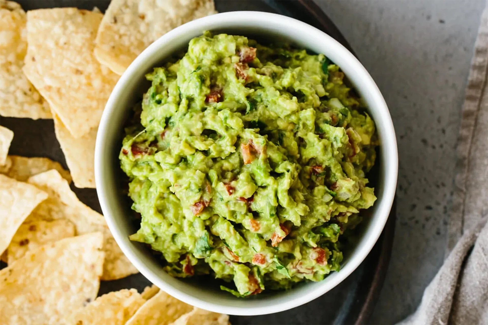

Guacamole

Ingredients
- 3 ripe avocados
- 1 small onion, finely chopped
- 2-3 small tomatoes, diced
- 1-2 cloves garlic, minced
- 1 jalapeño pepper, seeds removed and finely chopped
- Juice of 1 lime
- 1/4 cup fresh cilantro, chopped
- Salt and pepper, to taste
Instructions
- Cut the avocados in half and remove the pits. Scoop out the flesh into a mixing bowl.
- Mash the avocados with a fork until you reach your desired consistency (chunky or smooth).
- Add the chopped onion, diced tomatoes, minced garlic, and finely chopped jalapeño pepper to the mashed avocados. Mix well.
- Squeeze the lime juice over the mixture and add the chopped cilantro.
- Season with salt and pepper to taste. Mix everything together until well combined.
- Cover the guacamole with plastic wrap, making sure it touches the surface to prevent browning. Refrigerate for at least 30 minutes before serving.
Time
- Preparation Time: 15 minutes
- Total Time: 45 minutes (including refrigeration time)
Facts about Guacamole
- Guacamole is a traditional Mexican dip made from avocados.
- Avocados are rich in healthy monounsaturated fats and are a great source of vitamins and minerals.
- Guacamole is usually served with tortilla chips, but it can also be used as a topping for tacos, burritos, and other Mexican dishes.
- Adding lime juice not only enhances the flavor of the guacamole but also helps prevent the avocados from turning brown.
- Jalapeño peppers can add a spicy kick to the guacamole, but you can adjust the amount to your preference.
- Cilantro adds a fresh and herbal flavor to the guacamole, but if you're not a fan, you can omit it or use parsley instead.
- Guacamole is a delicious and nutritious dip that can be enjoyed as a snack or appetizer.
- It's best to use ripe avocados for the creamiest and tastiest guacamole.
- Guacamole is a versatile dish that can be customized with additional ingredients like diced onions, chopped tomatoes, or diced bell peppers.
- Once prepared, guacamole should be consumed within a day to ensure the freshest taste and texture.
Enjoy the creamy and flavorful goodness of Guacamole!